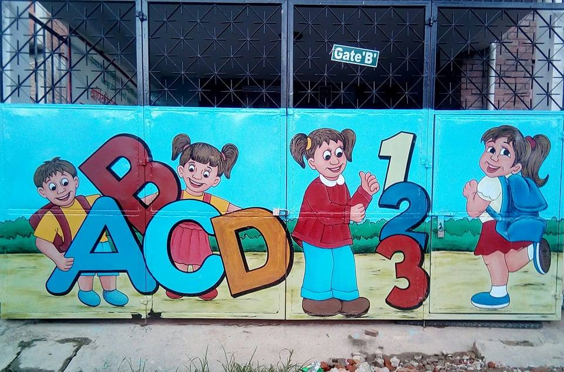
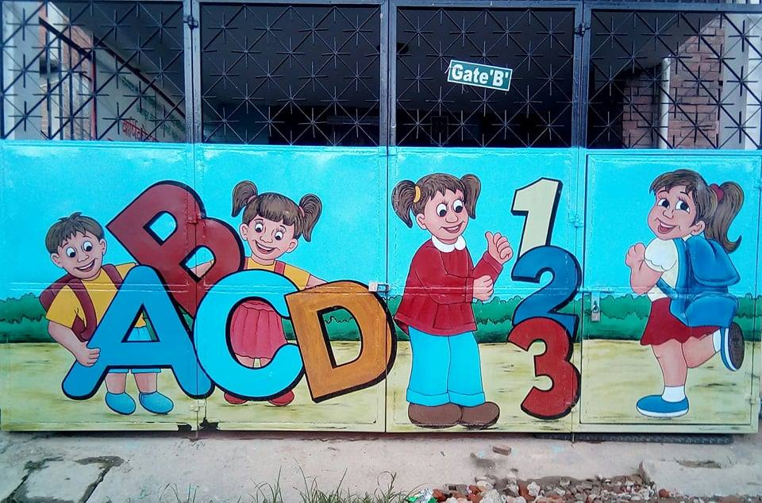

Yoogal arts was officially founded in the year 1985 by Sudershan Pokhrel. Having participated in several businesses arts and advertisement, now he aims to exhibit his arts also in your schools, colleges with fascinating decoration needed to attract your students and preschool children. He also displayed his extra ordinary talents while he lived in India for a couple years and he was awarded as a second best artist in Northern India in the year 2005


 
